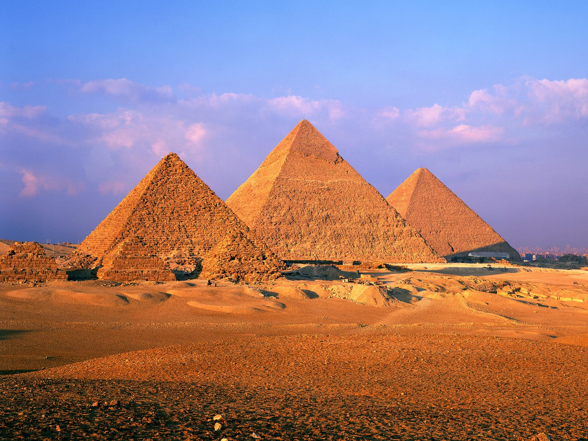

This is the culture of Thailand. It is rich in traditions and art.
⭐⭐⭐
The culture of Korea is vibrant and full of life.
⭐⭐
Lebanon's culture is known for its music and festivals.
⭐⭐⭐⭐⭐
The culture of Greece is deeply rooted in history.
⭐⭐⭐⭐
The culture of Spain is rich in traditions
⭐⭐⭐⭐

The Egyptian culture is one of the oldest cultures in the world
⭐⭐⭐⭐